哪有没有时间这回事
第一章 初级
一天分成多个时间段不要分成每个小时的时间表，八分饱刚刚好。
日程安排六要素：
时间、地点、物品、环境、他人、身心状态
自我成长时段：阅读、健身、编程学习
专注烧脑时段（效率最高）：
家务时段：洗漱、做饭
工作时间：9:30-12:00 午休时间 1:00-6:30
睡觉
工作安排
核心任务：
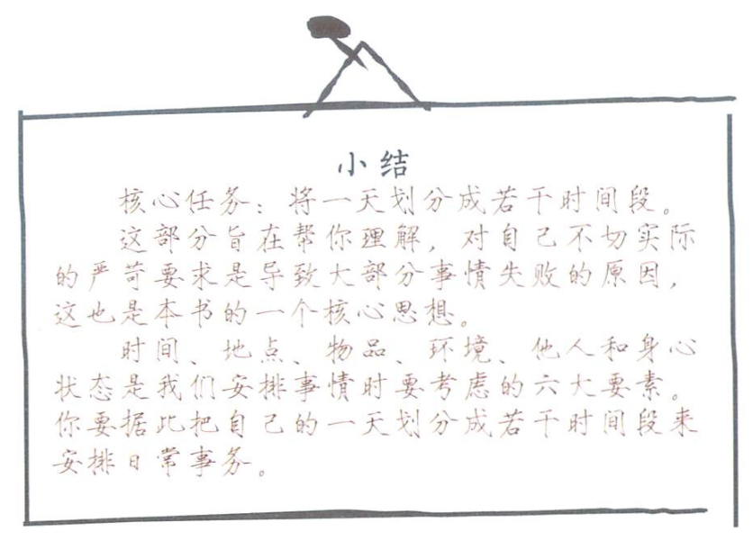界限、八分饱、仪式感
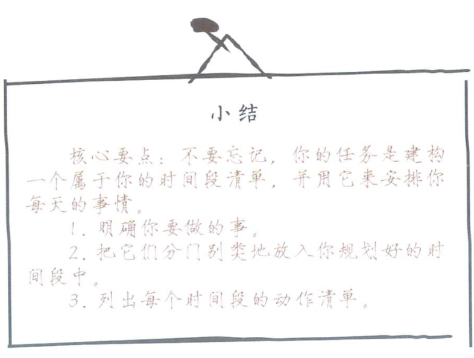小憩：12点40 20分钟
早起
确定起床时间->设置wake、up闹钟->清醒、洗漱
安排好早起要做的事情 ，头脑中过一遍
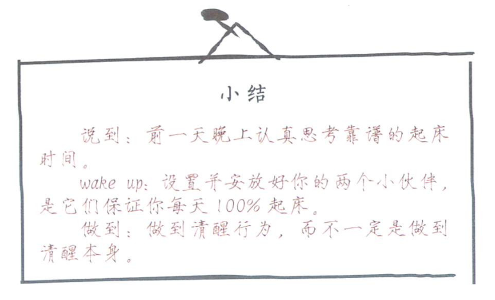我们工作的时候不是最怕打扰嘛，一被其他人打扰我们就得被迫停止原来的思考，时间就这样被切碎了，效率大大下降。早到公司这段时间根本没人打扰，大块的时间可以专心工作。不仅如此，这样做还能够化被动为主动，避免接下来的8小时被人打扰。一旦你完成了自己的重要任务，就可以主动“出击”，当同事们被你弄得“鸡犬不宁”时，他们也就无暇来“打扰”你了。
主动出击“打扰”同事有三种方式。
汇报、督促、闲聊今日总结，明日准备
查看第二天的天气
思考第二天的日程和任务安排
准备第二天的早餐
铺好第二天早上锻炼需要的地毯
晚上8:00-10:00 学习
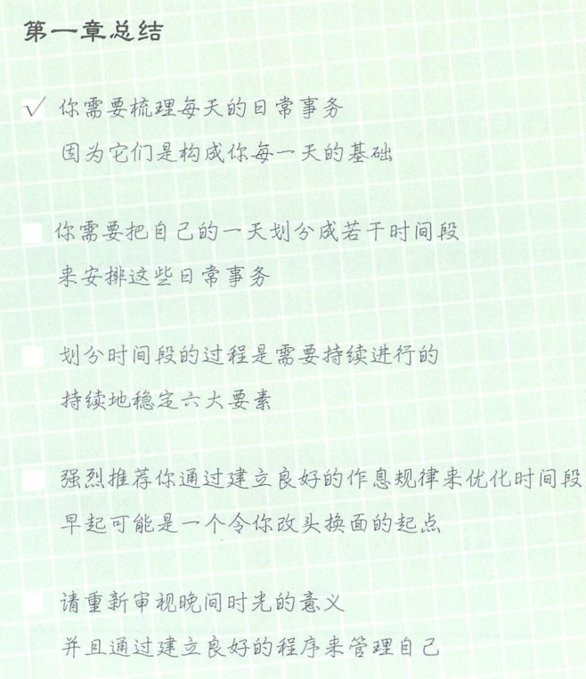第二章 八分饱
大脑结构-四个单位，工作记忆1-2分钟
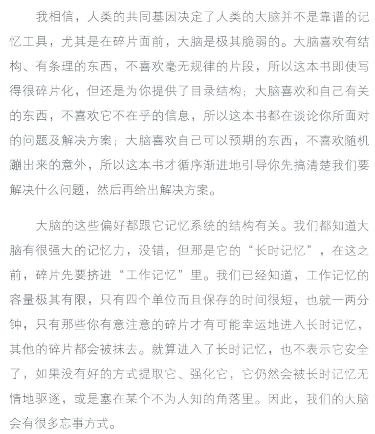A.不当回事
大脑存储东西太多健忘，列个事情清单
B.彻底忘记
当一个人忘记了一件事，他怎么知道自己忘记了
C.提取失败
很难想起。如超时购物，1.太杂忘记想买什么，2.新鲜商品干扰
D.压抑
想起来就烦，烦就不愿去想
碎片清单
碎片清单—大脑的缓冲池； 记录： 信息、事情、想法
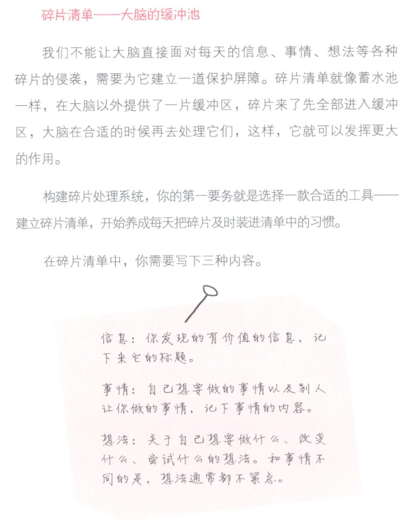总结一下往碎片清单上记录碎片的原则及要点。
what：记录一切未尽事宜，包括要读的信息、要干的事情、要实践的想法。
when：念头产生后立刻记。
where：选择你用起来最随身、最方便、最顺手的工具，本书推荐使用手机应用。
how：无须过多思考，用最简短的词语忠实记录原始信息。
why：大脑不靠谱，会忘、会多想、会焦虑、会不当事儿、会否定……我们根本不给它这个机会。
想法–最终会有时间去做，变成现实
新工作模式—打太极
：明天或者以后完成，“好的，我已经记下来了”
无事就处理碎片清单
清单处理：
1.可以不做吗？
2.可以以后做吗？
3.可以找人帮忙吗？
4.可以现在做吗？
5.有确定的时间点吗？
6.接下来我能做些什么？
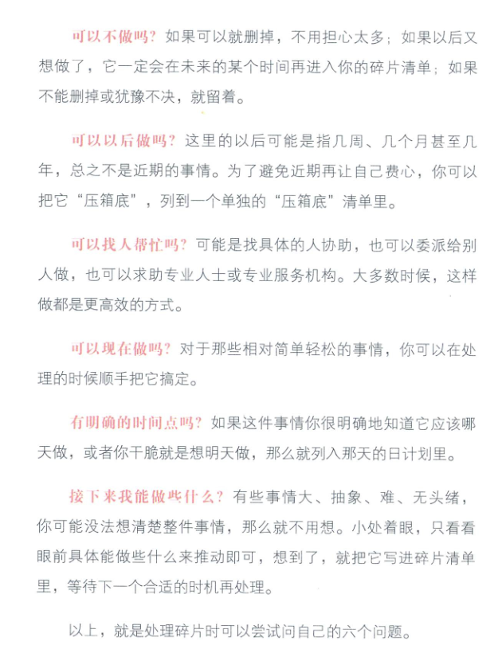新时间四象限：
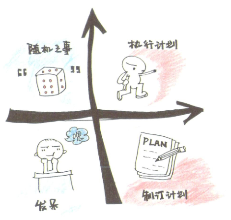执行计划：当你在执行自己的计划时，会有一种按部就班的节奏感，在一个个任务被打钩划掉之后，会有很强的成就感。
随机之事：紧急情况、即兴发挥等都是随机之事，它们并不在你的计划之列，你也无法计划它们。要么是突发情况，要么是突发奇想，完成了这些事情你同样会很有成就感，但无法从中体到计划性
发呆：这里不仅是指做白日梦，还包括看电视剧、打游戏等任何令你看上去很无脑的休闲娱乐活动，此时的你对于别人来说一样是在发呆。发呆时的时光流逝感让你觉得自己浪费了时间，而且也影响了计划。但是，正常、健康的人生需要发呆，你值得拥有
制定计划：就是考虑事情怎么做。制订好计划让你有强烈的掌控感，但无论安排得多么完美，其实你当下一件事情都没有完成，都还只是计划而已
碎片清单不是目的，在其他合适的实践去思考它、处理它—>最终形成《每日任务清单》
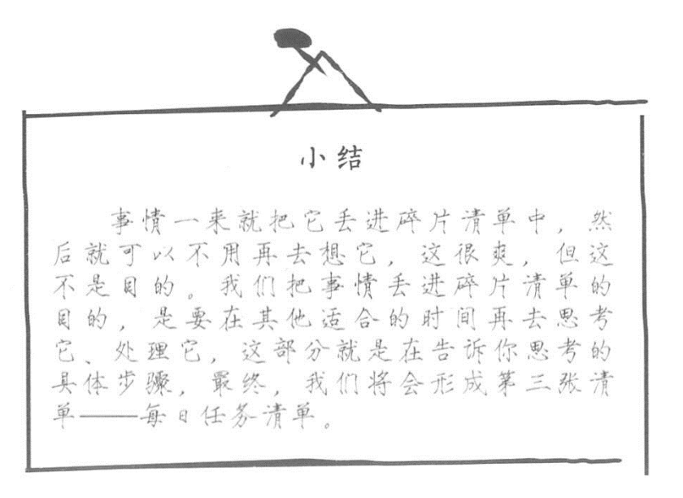《帕金森定律》
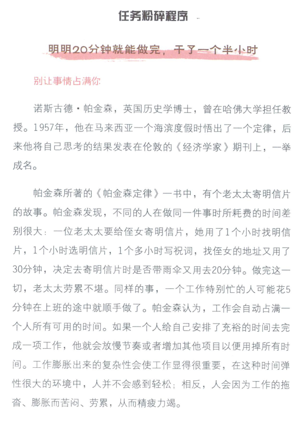平衡计划和执行
关注过程而非结果
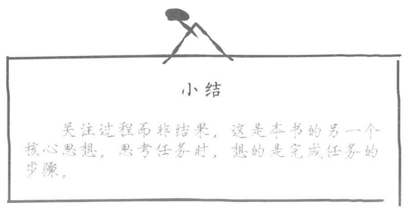事情优先级—自然排序
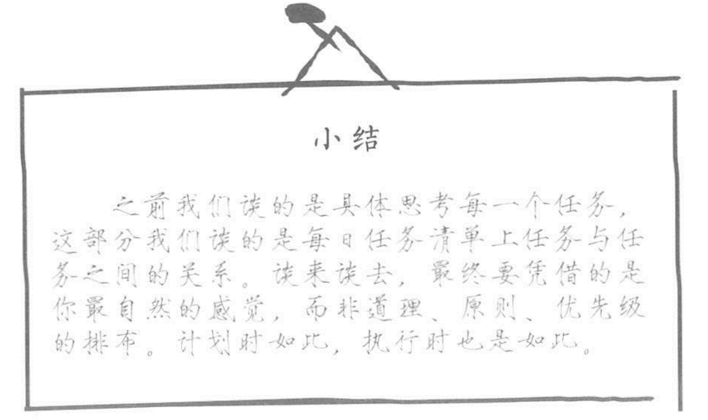人们更喜欢专注与自己喜欢的东西。当专注于不喜欢的东西时，专注不是目的，是手段。
习惯是无法改变的，只能一种习惯代替另一种习惯。
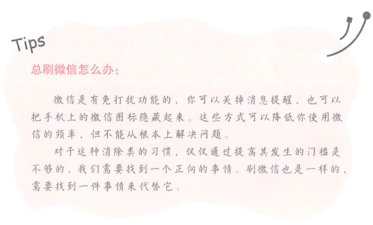有效思考要把想法编程动作
为何容易投入游戏：有目标、有规则（过程）、还有即时的正反馈。
专注—大脑的思考过程没有被割断。
消除掉工作环境中的刺激碎片。
眼里静，耳里清，心里宁。
用笔思考–避免外部干扰
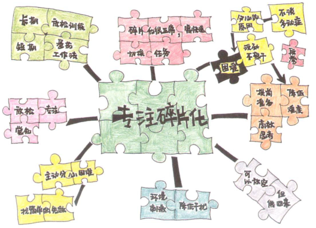碎片化专注：专注、放空、专注、放空、专注、放空。。。。。。累倒放空也不想—该休息了。
- 两个自己：一个执行、一个监督者
- 放空：停止走神，放松然后监督者拉回状态
番茄工作法–基础训练 25-5-25-5-25-5-25-休息半小时
禅修、冥想–进阶
告别专注，学会在不同任务中切换
时间段清单、碎片清单、每日任务清单
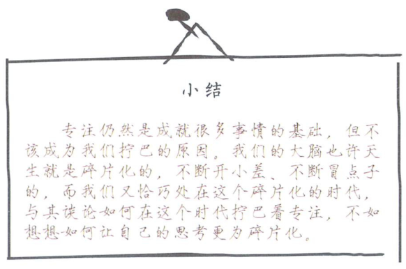这种打钩的方式和小红花没有本质区别，当你需要坚持某件事情的时候，首先应该坚持“打卡”。每一个钩都代表你实施了你期望的行为，累积它们会增加你的成就感。要注意，当你要培养某个好习惯时，只打钩不打叉。打叉是一种对于自己“失败”的记录，我们没有必要关注失败，而应关注自己的进步—哪怕是微不足道的进步。
无论如何，打卡时绝对不能只打叉，单纯地记录失败是令人泄气的。
打卡是一种最简单的调动你的能量促使你坚持的方式。之前你已经知道了要随时把碎片丢进碎片清单里，也知道了每天要建立任务清单，结果你坚持得如何？真正是每天都坚持了吗？一周能坚持做到几天呢？打卡正是为了帮你了解上述问题。
打卡是你唯一需要培养的习惯。
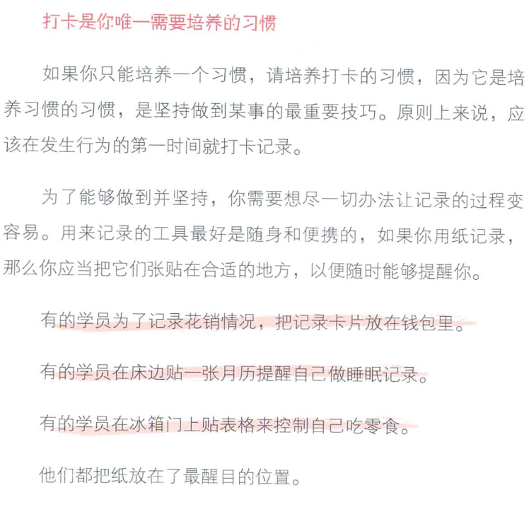==当一个人处于被观察的状态时，其行为本身就会发生改变。==
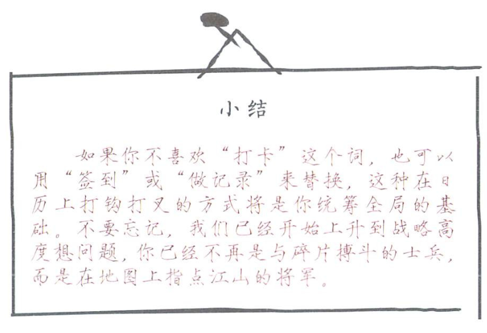书籍–《晨间日记的奇迹》
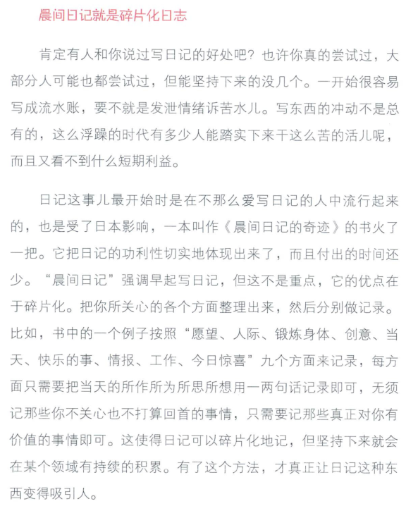积累碎片，积累成就感。
!
碎片化日志记录：事件，思考与感受，特定领域、成长与成就、日程的安排
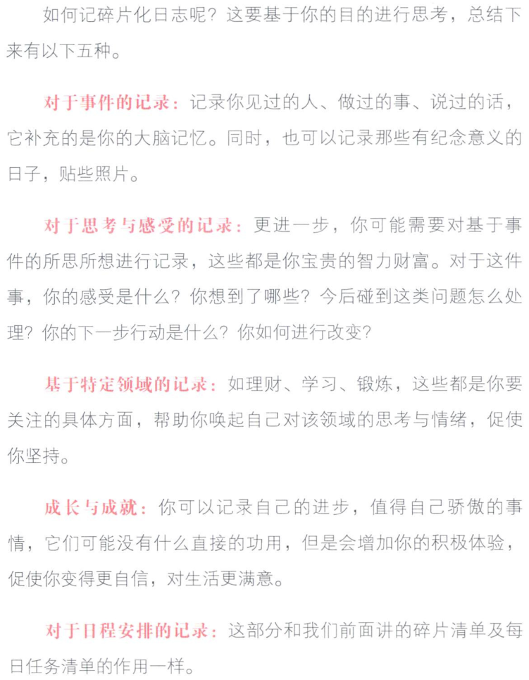 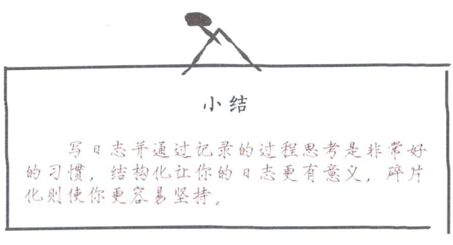未经反思的人生不值一过
一种沉思，一种准备
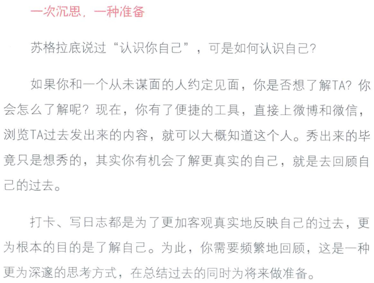 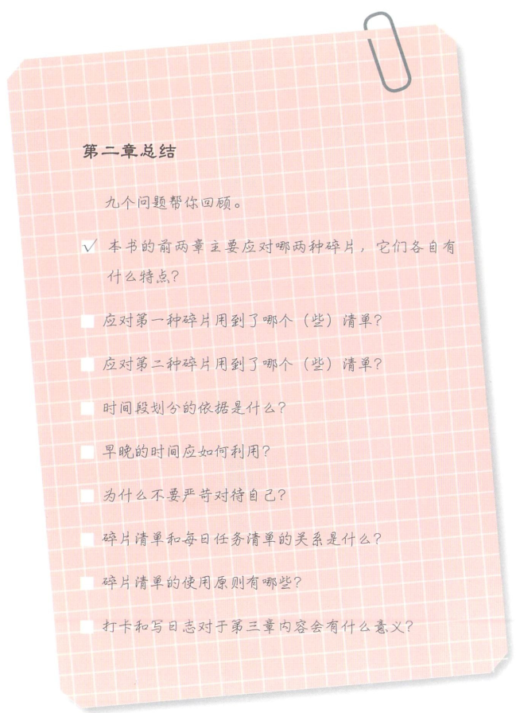第三章 让高效好不费力的高级技能
“知易行难”，即”非知之艰，行之惟艰”。
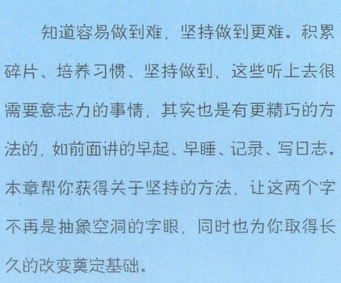对习惯的认知
有三点看不但有极其本质的不同影响了人们坚持的习惯，把这三点搞定，你就可以轻松地在短期内培养大量好习惯。
1.对习惯的理解
2.对习惯培养过程的理解
3.对不同方法在不同阶段正副作的理解
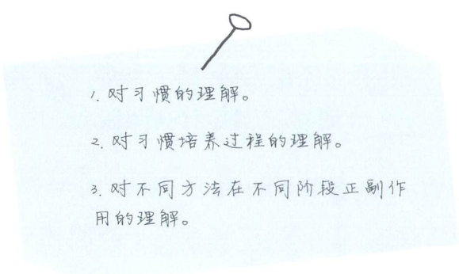积累的力量：长期积累所形成的差距让人望尘莫及
竖看一天，横看一生
*概率思维是人类认知的死穴。*
概率
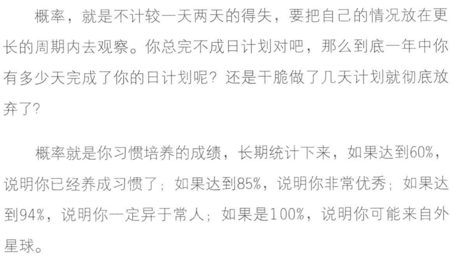聚焦可操作的行为
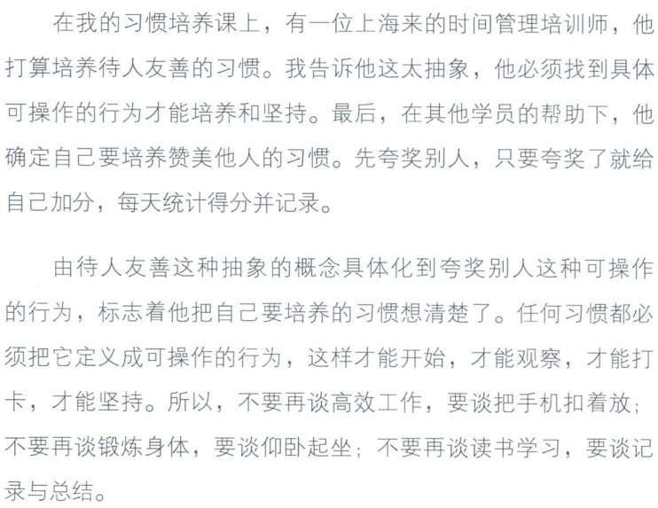创造行为发生的条件
当我们谈坚持某种行为习惯时，其实我们是在谈坚持为它创造条件。和植物生长类似，习惯养成只需要考虑六大条件：时间、地点、物品、环境、身心、他人。
为自己创建专注的环境
坚持：坚持的不是结果，而是正确的过程。
习惯不是重复
Flappy Bird：飞10根管子和100根管子没有区别，它挑战的是专注力而不是技巧本身。
习惯培养的过程更像是玩Flappy Bird，你无法在最开始制订出靠谱的计划，因为你根本是个new bird。随着游戏次数的累积，游戏进程在演变，你自己的状态也在不断变化，你会不断地想办法调整自己的状态以便匹配游戏进程，直到你再也无法从中找到乐趣。
心理学家提出行为改变的阶段性理论：
重点关注第二、三阶段
第一阶段：人处于无知状态，也就是并没有意识到自己存在什么问题，并不打算培养某项习惯。比如在阅读这本书之前，你可能从未意识到记录日志并不断回顾和反思的意义所在，所以你不会去做任何尝试。这个阶段我们可以忽略掉，因为没有什么方法可以让你主动地意识到你没意识到的问题，我们永远无法教会不抽烟的人戒烟的方法。
第二阶段：探索尝试期，有点像你刚玩Flappy Bird，刚开始做记录，刚开始跑步。你已经意识到了自己的问题，并且确定要开始着手培养这个习惯了。你的任务是要解决如下问题：
游戏是石适合你？
游我规则是什么？
你是否有能力玩这个游戏？
你是否有意愿付出努力？
玩这个游我对你有什么意义？
如何玩好？
这个阶段我们要重点关注，多数人折在这里。
第三阶段：行为固化期，你的习惯行为已经持续了一段时间，你的任务是要让它更加稳固，把它对你个人的意义放大。这个阶段我们也要重点关注，很多“过来人”会把这个阶段应采取的方法强推给“菜鸟”，导致“菜鸟”习惯培养失败。
第四阶段：你的习惯已经稳定了，除非碰到工作和生活的较大变化，它不太会离开你，即使离开你，你也会有信心重新开始建立它。这个阶段我们也不需要重点关注。
找到适合自己的习惯
聪明的坚持者、傻傻的坚持者
你无法“不做什么”
当人们想消除自己的某种行为来换取效率或健康时，通常都会很自然地下定决心不做某事。不看手机、不上网、不说脏话……你听说过“别想粉色的大象”吗？说的就是越是压抑你就越想。不做某事就要找到一个更为积极的行为去替代，比如你要坚持的是读书，而不是坚持不看手机，因为不看手机这事儿你根本坚持不住。
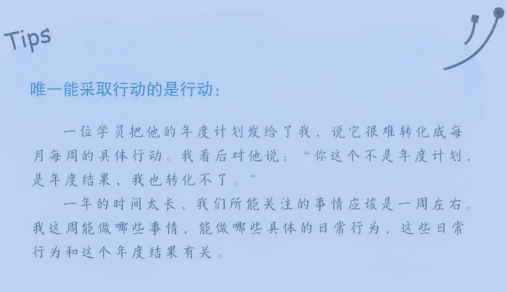坚持碎片化思维
碎片化时代的情绪管理
碎片化时代的病（碎片痨）：易怒、易焦虑、常心不在焉、忙叨但不开心、信息多但智慧少。
治疗：
经常做出微笑表情
经常用愉悦的语调说话
经常舒展自己的身体
经常关注自己的呼吸，加深，加慢
不要重复造轮子:学习借鉴现成的方法和工具。
进入雷区先排雷
不要“裸奔”
不怕输一盘，怕放弃比赛
当遇到困难和压力时，那些曾经让你舒适的旧习惯就又会回来。所以，问题并不在于你会不会重新回到旧的习惯中去，而是你如何看待它。
偶尔一次回到旧的行为习惯中并不意味着失败，它只是在提醒你还没练到家，习惯行为发生的概率则告诉了你现在的成绩如何。你要时刻提醒自己，你是在练习一种技能，无法接受失误导致的破罐破摔是你思维中埋藏的最大的炸弹。
避开诱惑
取得朋友的支持
有时身边的诱惑不是物品是人
嘘，不要说出来
外部压力
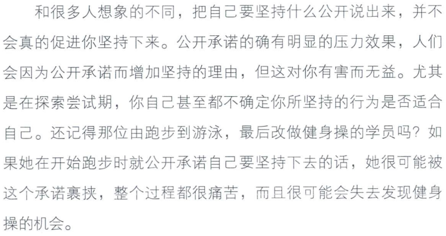习惯多米诺
头天晚上设定闹钟->wake闹钟响起->关掉up闹钟->洗漱
确定时间
“有空”就做，有空是个遐想的状态，要明确时间。
确定地点
合适的地方做合适的事情
有趣、方便的物品
“有趣和便捷”而不是“顶级、昂贵”
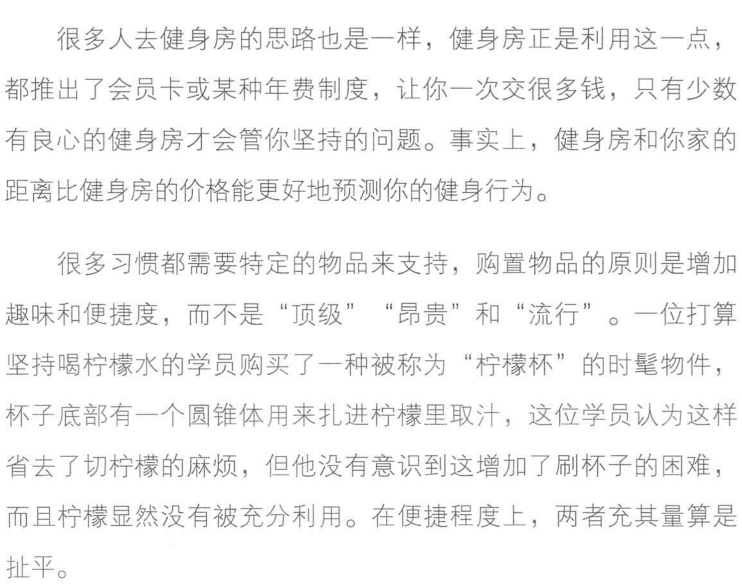选择环境
我们可以选择环境，甚至随心所欲的改造环境
调节身心状态
洗澡、禅修、冥想。让自己更容易进入状态
充分认识人的影响
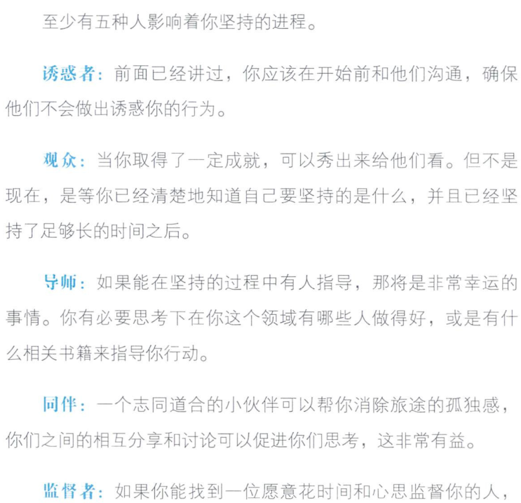 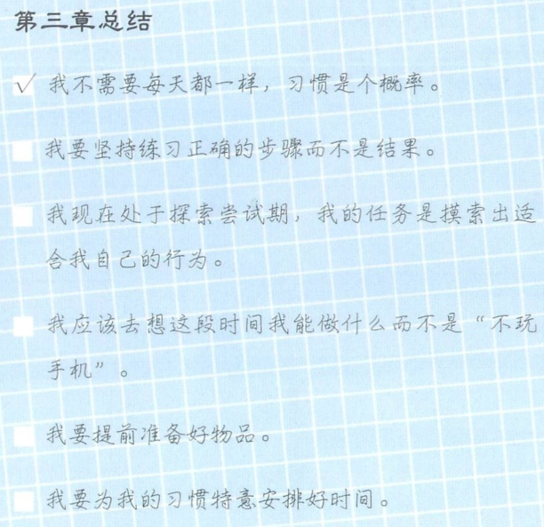 陕公安备案61092402000103号
陕公安备案61092402000103号